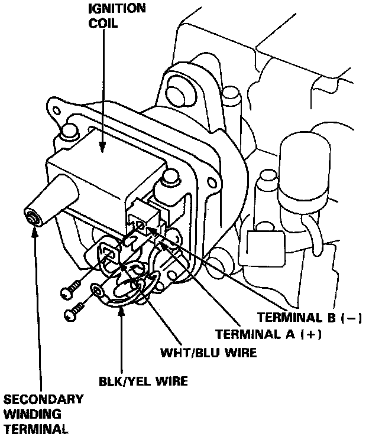

Ignition Coil: Description and Operation
Ignition Coil Testing & Replacement:

PURPOSE
The Ignition Coil transforms battery voltage into ignition voltage and delivers it in the form of a high voltage surge to the secondary ignition components.
CONSTRUCTION
The Ignition Coil contains two windings of copper wire around a soft iron core. The primary winding is made of a hundred or so turns of wire. The secondary winding contains several thousand turns of wire wound directly onto the iron core. The ratio of the number of wraps in the secondary winding to the number of wraps in the primary windings determines the output voltage of the coil.
The primary winding is connected directly to the ignition switch (+) and ignition control module (-). The secondary winding is connected to the coil output tower through the iron core.
OPERATION
Current flow through the primary winding is stored as a magnetic field. When current flow in the primary winding is interrupted (by the igniter breaking the circuit ground), the magnetic field collapses, inducing a voltage surge into the secondary windings.